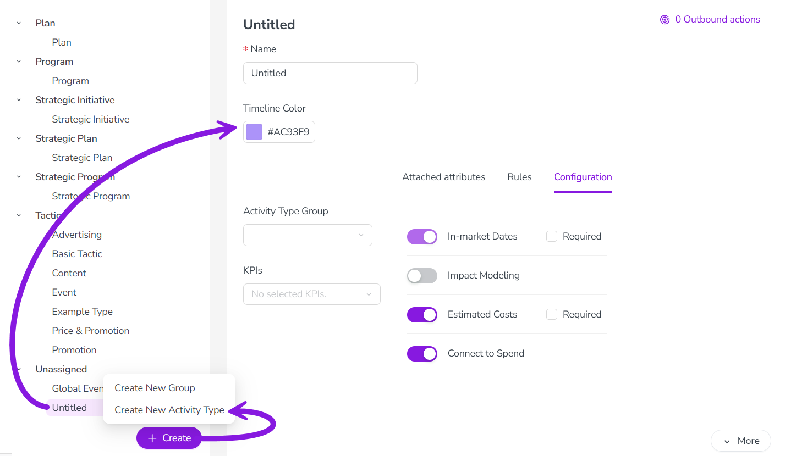
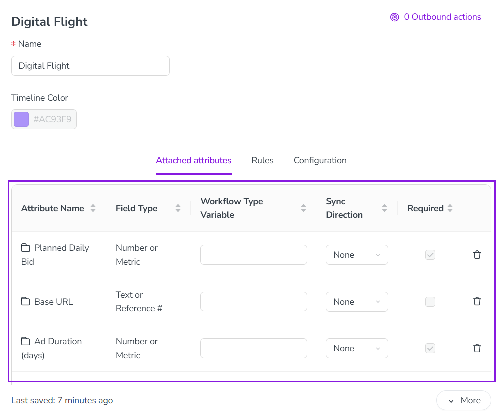
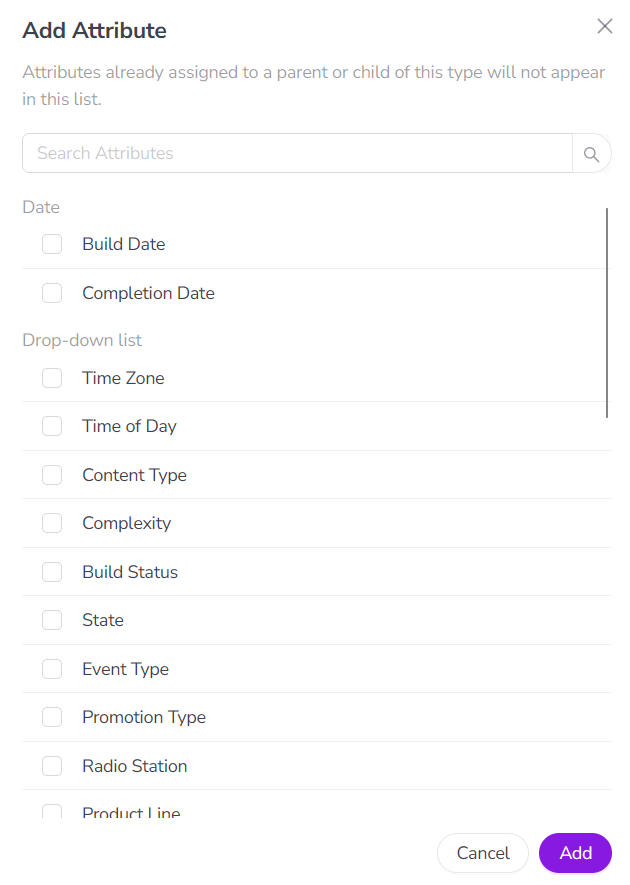
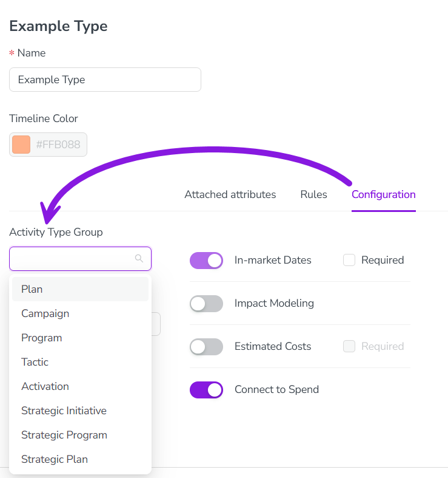

Create and configure activity types
You can create new activity types at any time.
After creating an activity type, you can optionally assign it to an activity type group, and configure which attributes are attached to the activity type. You can also configure options to customize how the activity type works.
- Before you begin
Before you create a new activity type, first:
Create all attributes that you want to use with the activity type. For instructions, see Create and configure attributes.
Optionally, create the activity type group that the activity type should belong to. For instructions, see Create activity type groups.
Create a new activity type
In the
 Activities section, click
Activities section, click  Settings:
Settings: 
In the Activity Configuration menu, click Activities > Types & Groups.
The Types & Groups section is shown. Any existing activity types and groups are listed in the panel on the left. Settings for the selected activity type or type group are shown in the panel on the right:

At the bottom of the list panel, click + Create, then select Create New Activity Type.
The new type is created with the default name "Untitled", and is added to the bottom of the list panel. It is automatically selected and displayed in the settings panel:

Enter a name for the new activity type into the Name field.
All changes are saved automatically, and take effect immediately.
You have created a new activity type, and can now configure it.
Configure an activity type
After you have created an activity type, you can configure it by:
Attaching attributes to the activity type.
Assigning Key Performance Indicators (KPIs) to the activity type.
Configuring settings for additional functionality, such as Estimated Costs or Impact Modeler.
Optionally, you can also assign the activity type to an activity type group.
Attach attributes to an activity type
You can attach any existing attribute to an activity type. When an attribute is attached to an activity type, the attribute's form field is displayed whenever a user creates an activity of the type (in the activity setup assistant) or edits an activity of the type (in the details panel). You can also set any attached attribute as required to make it mandatory for users to specify a value for the attribute when creating or editing an activity.
Attach attributes to an activity type
In Activity Configuration > Activities > Types & Groups, click on the activity type that you want to attach attributes to. The activity type's settings panel is displayed.
Click the Attached attributes tab. The table of attached attributes is displayed, listing any attributes that are already attached (such as attributes inherited from the parent activity type group):

Scroll to the bottom of the table of attached attributes and click + Add Attribute. The Add Attribute dialog opens, displaying available attributes (organized by attribute type):

Select attributes to attach using the checkboxes:
You can select one or multiple attributes.
Click Add to attach all selected attributes to the activity type.
The Add Attribute dialog closes, and the selected attributes appear in the table of attached attributes.
Optional: To set an attribute as required, select its checkbox under the Required column in the table of attached attributes.
All changes are saved automatically, and take effect immediately.
You have added attributes to the activity type, and these attributes will now be displayed when an activity of this type is created.
Assign KPIs to an activity type
You can assign Key Performance Indicators (KPIs) to an activity type to track those KPIs on all activities of that type. Assigning at least one KPI to an activity type causes the KPIs tab to be displayed in the details panel of activities of the type, where the assigned KPI fields are displayed.
Assign KPIs to an activity type
In Activity Configuration > Activities > Types & Groups, click on the activity type that you want to assign KPIs to. The activity type's settings panel is displayed.
Click the Configuration tab.
Use the KPIs menu to select the KPIs you want to assign to the activity type.
All changes are saved automatically, and take effect immediately.
You have assigned KPIs to the activity type, and all activities of the type now display the KPIs tab on their details panel.
Configure additional functionality settings
For each activity type, you can choose to activate or deactivate various additional functions, and configure how these functions work if they're active.
You can configure settings for the following functionality for any activity type:
- In-Market Dates
Sets whether the in-market dates fields are displayed on activities of this type, allowing users to specify the start and end dates for an activity's in-market period.
To configure:
This setting is turned on by default, so the in-market dates fields will be displayed on all activities of this type.
Optional: Select the Required checkbox to set the in-market dates fields as required (users must set start and end dates for all activities of the type).
It is currently not possible to turn off this setting and hide the in-market dates fields on activities.
- Impact Modeling
Sets whether the Impact section is displayed on the details panel for activities of this type, allowing users to enter funnel performance data for an activity. For more information, see Create and configure Impact Modeler pipeline models.
To configure:
This setting is turned off by default. To display the Impact section on activities of this type, click the Impact Modeling toggle to turn it on.
To hide the Impact section, leave the Impact Modeling toggle in the off position.
- Estimated Costs
Sets whether the Estimated Costs tab is displayed on the details panel for activities of this type, allowing users to enter cost estimates for an activity. For more information, see Track and analyze activity budgets.
To configure:
This setting is turned on by default, so the Estimated Costs tab will be displayed on all activities of this type.
Optional: Select the Required checkbox to set the Estimated Costs input fields as required (users must set a value).
To hide the Estimated Costs tab, click the Estimated Costs toggle to set it to the off position.
- Connect to Spend
Sets whether investments (created in
 Investments section of Uptempo) can be connected to activities of this type. This setting is useful if you want to ensure that all funding connections are made only at a specific level of your activity hierarchy, for example at the lowest level if you use bottom-up planning. For more information, see Connect investments to track activity funding.
Investments section of Uptempo) can be connected to activities of this type. This setting is useful if you want to ensure that all funding connections are made only at a specific level of your activity hierarchy, for example at the lowest level if you use bottom-up planning. For more information, see Connect investments to track activity funding.To configure:
This setting is turned on by default, so investments are allowed to be connected to all activities of this type.
To prevent investments from being connected to activities of this type, click the Connect to Spend toggle to turn it to the off position.
Configure functionality settings for an activity type
In Activity Configuration > Activities > Types & Groups, click on the activity type for which you want to customize optional features. The activity type's settings panel is displayed.
Click the Configuration tab.
Use the toggle switches to turn optional functionality on and off. If available, select the Required checkbox to set the related input fields as required.
Your changes are saved automatically, and take effect immediately.
Assign an activity type to an activity type group
You can optionally assign an activity type to any existing activity type group. Assigning activity types to groups is not required, but is recommended because it simplifies managing similar or related activity types. All activity types in an activity type group inherit the group's attached attributes, and any activity rules that apply to the group (which are not specific to any particular activity type).
Assigning activity types to groups also makes it easier to create and work with activities for end users, as the system organizes available activity types by their assigned groups (for example, in the activity setup assistant, and the filtering and grouping menus).
Assign an activity type to a type group
In Activity Configuration > Activities > Types & Groups, click on the activity type you want to assign to a group in the list. The activity type's settings panel is displayed.
Click the Configuration tab.
Use the Activity Type Group menu to select the activity type group to assign the activity type to.

The change is saved automatically, and takes effect immediately.
You have assigned the activity type to an activity type group. The activity type appears under its assigned group in the list panel, and inherits the group's Timeline Color setting and attached attributes.